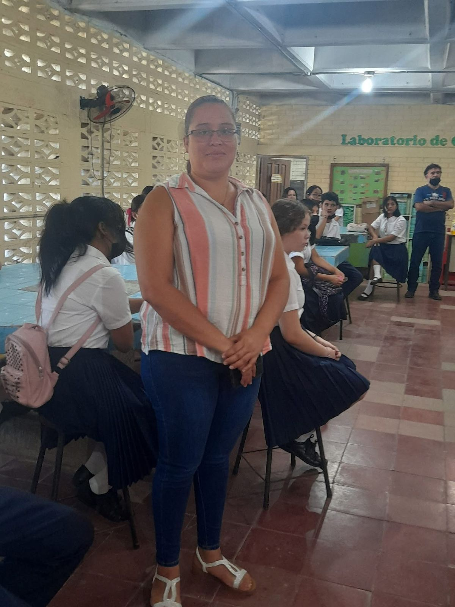
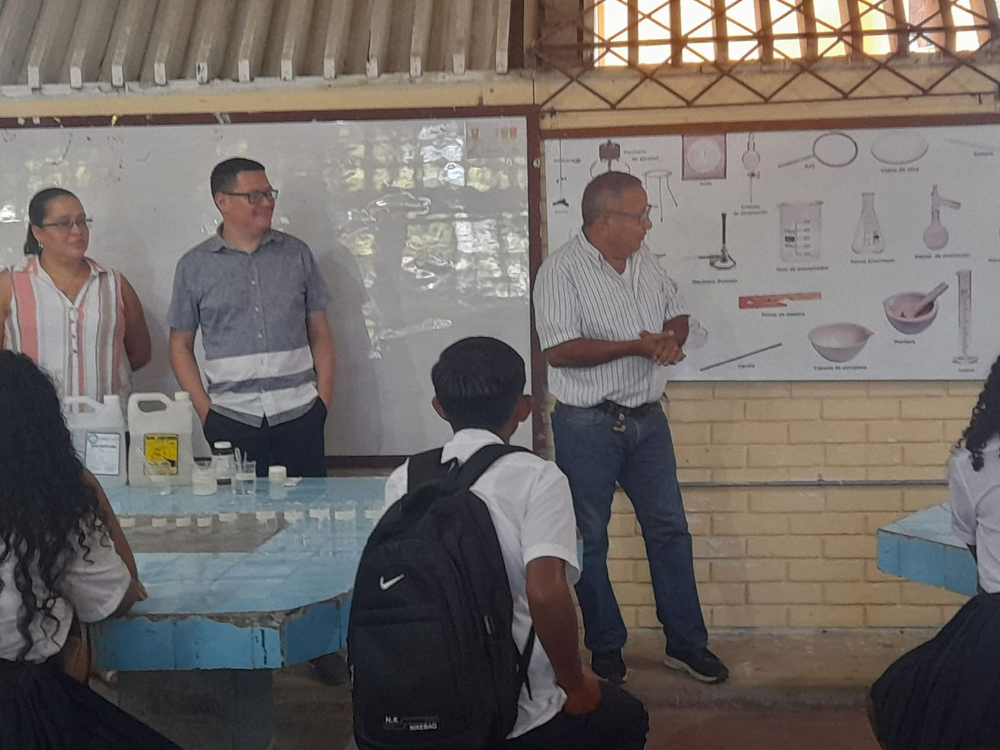

El Bachillerato en Ciencias y Humanidades (BCH) en Honduras es un programa de nivel medio que proporciona una formación integral en ciencias naturales, matemáticas, ciencias sociales y lenguaje, preparándolo para estudios superiores. Los estudiantes desarrollan habilidades de pensamiento crítico, análisis y expresión oral y escrita.
Programa Académico
Plan de estudios por años:
Ver asignaturas Décimo
Español: El objeto principal de esta asignatura es que los estudiantes adquieran destrezas en compresión y expresión oral y escrita y desarrollen la competencia comunicativa desde algunas de sus vertientes como pueden ser la pragmática, la lingüística o la sociolingüística entre otras.
Inglés: La asignatura de inglés, en el contexto educativo, se refiere a la materia o curso enfocado en el aprendizaje del idioma inglés, incluyendo sus aspectos lingüísticos, culturales y prácticos. En español, se puede traducir como "English subject" o "English course". Además, se puede referir a "English language" como el idioma en sí mismo, o "English studies" como la disciplina académica.
Informática: La "asignatura de informática" se refiere a un curso o materia que se enfoca en el estudio de las computadoras y los sistemas informáticos. Esta disciplina abarca tanto el hardware (la parte física de las computadoras) como el software (los programas y sistemas operativos). Además, la informática también incluye el estudio de cómo se procesa, almacena y transmite la información de forma automática.
Matemáticas: La asignatura de matemáticas es un campo amplio que incluye varias ramas como álgebra, geometría, cálculo, estadística, trigonometría, y aritmética, entre otras. Estas ramas se pueden agrupar en matemáticas aplicadas y matemáticas académicas. Las matemáticas son fundamentales para el razonamiento lógico, la resolución de problemas y el desarrollo de habilidades analíticas.
Sociología: La sociología es una disciplina que estudia la sociedad humana, sus estructuras, procesos y fenómenos. Se enfoca en analizar cómo las personas interactúan entre sí, cómo se forman los grupos sociales, y cómo funcionan las instituciones. En esencia, la sociología busca comprender la realidad social en todas sus dimensiones.
Educación física y deportes: busca desarrollar integralmente al estudiante a través de la actividad física y deportiva, promoviendo la salud, el bienestar y la adquisición de valores. Se enfoca en la mejora de las capacidades físicas, motrices, afectivas y cognitivas, utilizando el deporte como medio para alcanzar estos objetivos.
Historia de Honduras: es un curso académico que se enfoca en el estudio científico del pasado del territorio hondureño, analizando los eventos más importantes de las diversas sociedades que lo han habitado. El objetivo es comprender la evolución histórica, la cultura y la nacionalidad hondureña, fomentando el espíritu crítico y la capacidad de análisis en los estudiantes.
Psicología: explora el comportamiento humano y los procesos mentales. Se enfoca en áreas como la atención, la memoria, el desarrollo, la personalidad, las relaciones interpersonales y los trastornos mentales, además de abordar la interacción social, la motivación y la emoción.
Biología: se centra en el estudio de los seres vivos, abarcando su estructura, función, evolución y relaciones con el entorno. Es una disciplina amplia que incluye diversas ramas como la genética, ecología, microbiología, anatomía, botánica, zoología, entre otras.
Física: estudia los fundamentos del universo, incluyendo la materia, la energía, el espacio y el tiempo, y cómo interactúan entre sí. Se enfoca en entender las leyes fundamentales que gobiernan el comportamiento de la naturaleza y se divide en varias ramas, como mecánica, termodinámica, electricidad, magnetismo, y óptica.
Química: estudia la materia, su composición, estructura, propiedades y las reacciones que sufre. Se enfoca en entender los átomos, moléculas, y cómo interactúan, así como las leyes y principios que rigen estas interacciones. La química también explora las aplicaciones de estos conocimientos en diversos campos como la medicina, la industria y el medio ambiente.
Undécimo
Español:Desarrolla habilidades de comunicación oral y escrita en lengua española. Fomenta la comprensión lectora, la redacción correcta, el análisis de textos y la expresión de ideas con claridad y coherencia.
Filosofía:Estudia los fundamentos del pensamiento humano, la ética, la existencia y el conocimiento. Promueve el pensamiento crítico, la reflexión y la argumentación lógica sobre temas fundamentales de la vida y la sociedad.
Física:Ciencia que analiza los fenómenos naturales relacionados con la materia, la energía y sus interacciones. Incluye temas como movimiento, fuerza, electricidad, magnetismo, sonido y luz.
Matemática:Ciencia exacta que estudia los números, las estructuras, las formas y los cambios. Desarrolla el pensamiento lógico y habilidades para resolver problemas a través de la aritmética, álgebra, geometría, estadística y cálculo.
Antropología:Ciencia social que estudia al ser humano en sus dimensiones biológica, cultural y social. Analiza la evolución humana, las culturas, costumbres y estructuras sociales a lo largo del tiempo.
Inducción a la Economía:Introduce los principios básicos de la economía, como la oferta, demanda, producción, consumo, dinero, mercados y rol del Estado. Ayuda a comprender cómo se toman decisiones económicas a nivel personal, empresarial y nacional.
Biología:Ciencia que estudia los seres vivos, su estructura, funciones, evolución y relaciones con el entorno. Incluye temas como células, genética, organismos, ecosistemas y salud humana.
Historia Universal:Analiza los principales hechos, procesos y civilizaciones que han marcado la historia de la humanidad. Fomenta la comprensión del presente a partir del conocimiento del pasado.
Educación y Apreciación Artística:Promueve la valoración y comprensión del arte en sus diversas formas: música, pintura, teatro, danza y literatura. Estimula la creatividad, la sensibilidad estética y la expresión artística personal.
Programación y TIC:Combina el aprendizaje de principios básicos de programación con el uso de herramientas tecnológicas. Enseña a resolver problemas mediante código, usar software, y comprender el impacto de las TIC en la sociedad.
Inglés:Asignatura enfocada en el desarrollo de habilidades comunicativas en lengua inglesa: comprensión auditiva, lectura, escritura y conversación. Se trabaja vocabulario, gramática y situaciones prácticas del idioma.
Química:Ciencia que estudia la composición, estructura y transformación de la materia. Analiza cómo interactúan los elementos y compuestos, y su aplicación en la vida diaria y en la industria.
Actividades
ofrece una formación integral en ciencias, matemáticas, y áreas humanísticas como literatura, filosofía y ciencias sociales. Las actividades de este bachillerato están diseñadas para desarrollar el pensamiento crítico, la capacidad de análisis, la expresión oral y escrita, y la comprensión de contextos culturales y sociales.

Prácticas Profesionales
En este contexto, se refieren a actividades académicas, sociales o comunitarias que permiten al estudiante: Aplicar conocimientos adquiridos en clases. Desarrollar habilidades blandas como liderazgo, comunicación, trabajo en equipo y responsabilidad social. Tener un primer acercamiento al entorno profesional, académico o laboral. Fomentar el compromiso social y el servicio a la comunidad. Desarrollar habilidades que favorezcan la inserción futura en estudios superiores o en el ámbito laboral. Potenciar el pensamiento crítico y la autonomía del estudiante. Vincular el conocimiento académico con la realidad social.

Contacto
Dirección: CEMG Franklin Delano Roosevelt, Puerto Cortés, Honduras